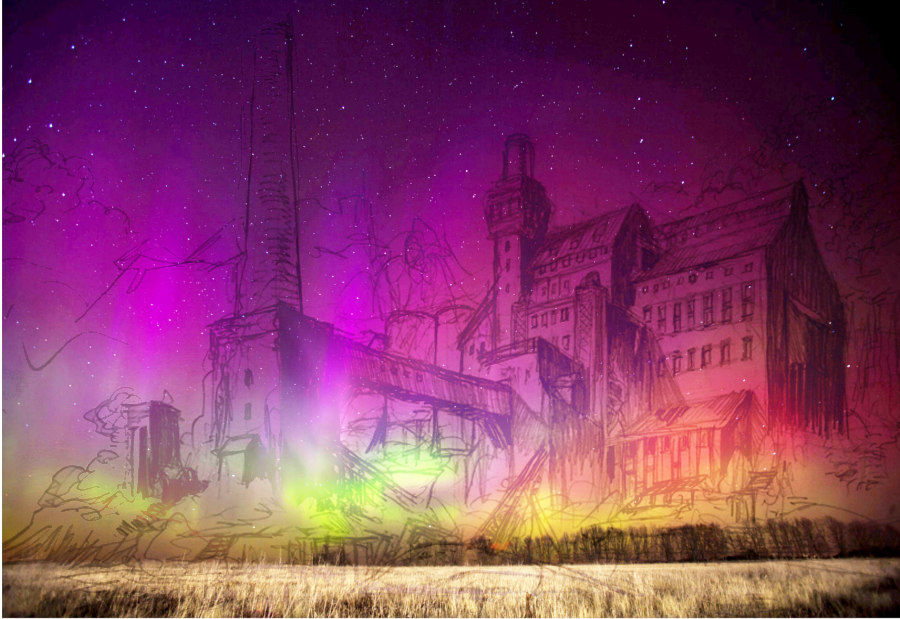
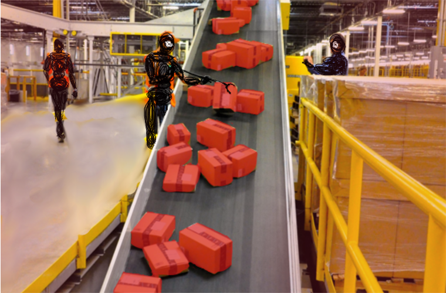
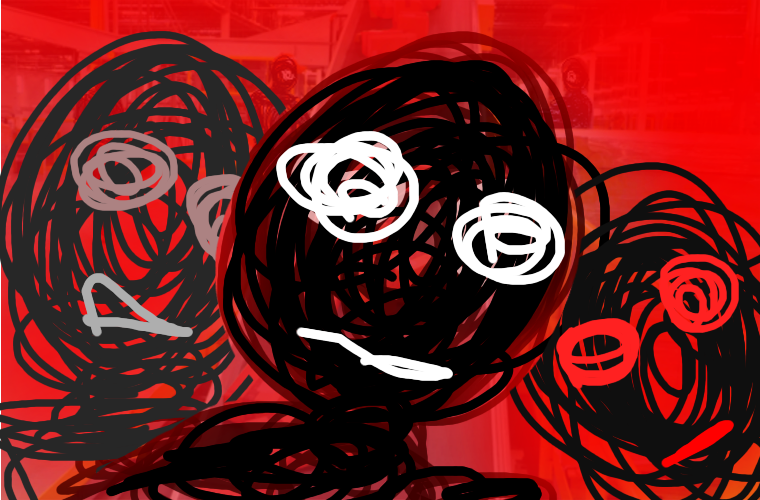
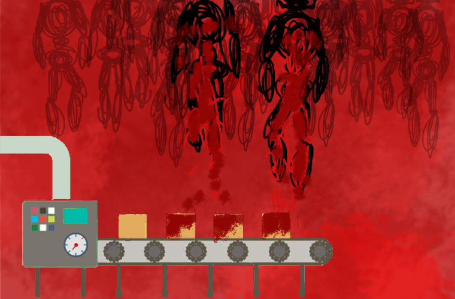
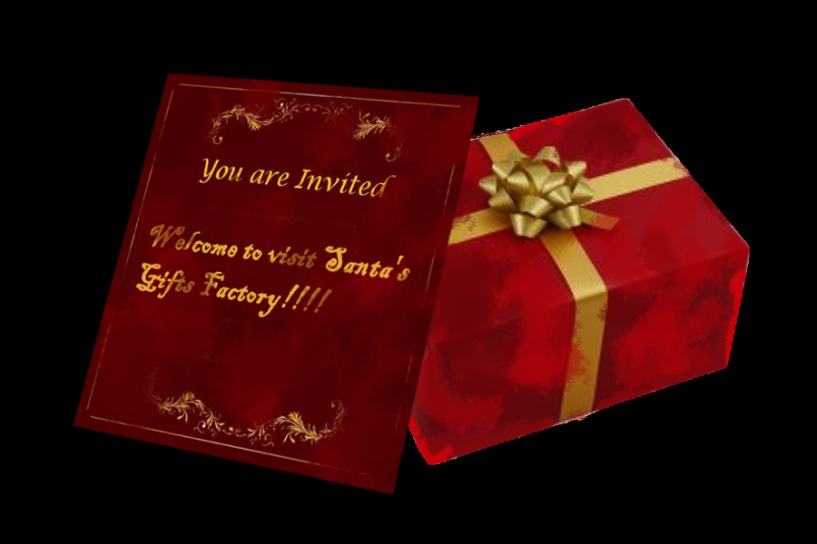

Scarlet
Christmas
 In the wonderful christmas Eve, little boy Jacky was sitting next to
the fireplace and waiting for Santa as he does every year. Suddenly, a small
gift with an invitation card appeared in front of him. "Merry Christmas, Jacky!!"
,he read it out. "Fortunately, you were chosed as a special visitor for visiting
my impressive gift factory in North Pole. Ho Ho Ho!"
In the wonderful christmas Eve, little boy Jacky was sitting next to
the fireplace and waiting for Santa as he does every year. Suddenly, a small
gift with an invitation card appeared in front of him. "Merry Christmas, Jacky!!"
,he read it out. "Fortunately, you were chosed as a special visitor for visiting
my impressive gift factory in North Pole. Ho Ho Ho!"
 Reinmoose and Santa had alrealy waited for Jacky out of the window.
He quickly got on Santa's sleigh and met with other kids who were also invited
to the gift factory. They talked, laughed and played together for a long time
until they arrived the destination.
Reinmoose and Santa had alrealy waited for Jacky out of the window.
He quickly got on Santa's sleigh and met with other kids who were also invited
to the gift factory. They talked, laughed and played together for a long time
until they arrived the destination.

Santa's gift factory was pretty beautiful and it was easy to see
aurora there. The kids were too excited to wait. They wanted to see how
Santa and his fairies make the gifts as soon as possible.
 They saw tons of gifts when they got into the factory. The
presents had already been distributed in groups and waiting to
give to the kids. A variety of gifts, but there was one thing
in common. The gifts were all red or the parts are red.
They saw tons of gifts when they got into the factory. The
presents had already been distributed in groups and waiting to
give to the kids. A variety of gifts, but there was one thing
in common. The gifts were all red or the parts are red.
 Santa said, "Let me show you how we make presents!! Just
folloe my steps and be careful don't get lost. Ho Ho Ho!" He guided the children
to watch his production equipment. There were many red boxes on the
conveyor belt with a bizarre smell, a odor of iron. For a unknown
reason, the boxes were all a little bit wet.
Santa said, "Let me show you how we make presents!! Just
folloe my steps and be careful don't get lost. Ho Ho Ho!" He guided the children
to watch his production equipment. There were many red boxes on the
conveyor belt with a bizarre smell, a odor of iron. For a unknown
reason, the boxes were all a little bit wet.
To look deeply, they walk into another area. The gifts there
were white and became red after they go through a machine.

They went to the last part of the production line.
As they could see, many black creatures were dealing with the red
boxes and going to pack them. And "Bang!!!!!"

Suddenly, the black cretures all appeared in front of Jacky and
other kids. "^%$#%(#$)%^#(%!@#@^", they said. The children trembled
with fear, they were too scared to run. They tried to call Santa for
help, however, Santa was gone and they all fainted.

(Humming sound)Jacky opened his eyes, and what he saw was his
friends all hung on the ceiling. Their blood was used to dye the boxes
. A familiar sound was talking, "Don't worried, Jacky. You will be
with them very soon. HO! HO!! HO!!!".

A gift appeared in front of Jacky's house. But the addressee
this turn is his little brother, Jeff. "Fortunately, you are invited to
visit Santa gift factory!! Merry Christmas, Jeff", the card wrote.